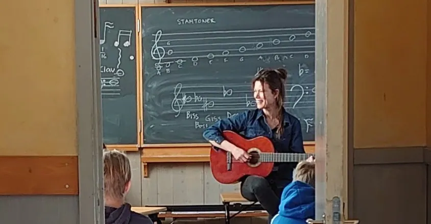
Medarbetare på Rudolf Steinerskolan
Ingen medarbetare matchar sökningen.
Åsa Gjesdahl
Biträdande rektor, speciallärare, ansvarig trygghetsgruppen
btr.rektor@rudolfsteinerskolan.seCia Edsberger
Bitr. rektor högstadiet, svenska åk 7-9, klassmentor åk 7
bit.rektor.hogstadiet@rudolfsteinerskolan.se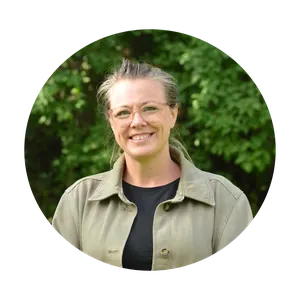
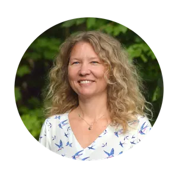
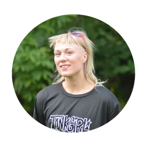
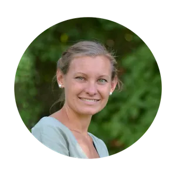
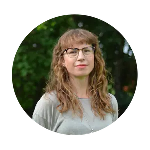
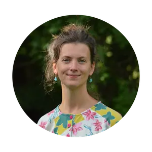
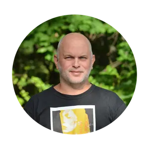
Jimmy Asklund
Ämneslärare idrott och hälsa, klassmentor åk 8 hem- och konsumentkunskap åk 6-9
jimmy.asklund@rudolfsteinerskolan.se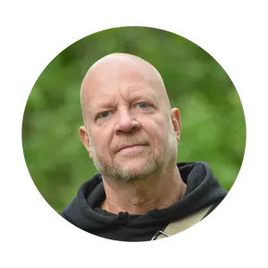
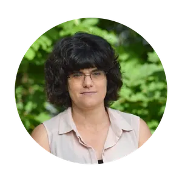
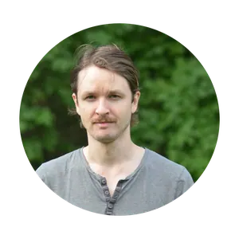
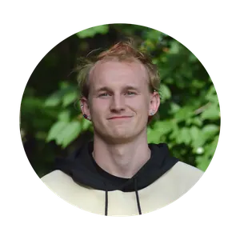
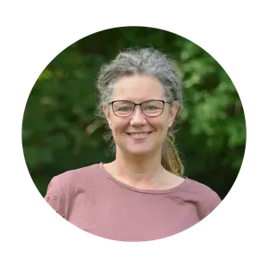
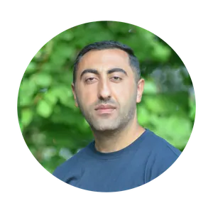
Angela Tischbein Madsen
Ämneslärare eurytmi, tyska åk 6
angela.tischbein-madsen@rudolfsteinerskolan.se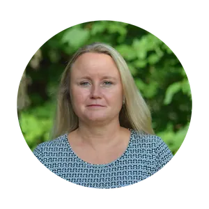
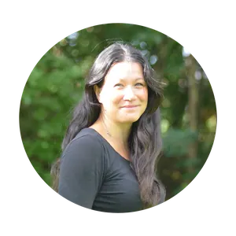
Nicole Arvehell
Trädgårdsmästare
Lorine Westling
Värdegrundsarbete
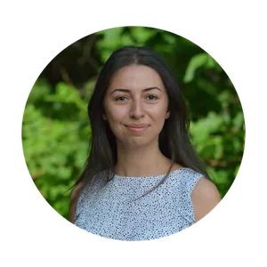